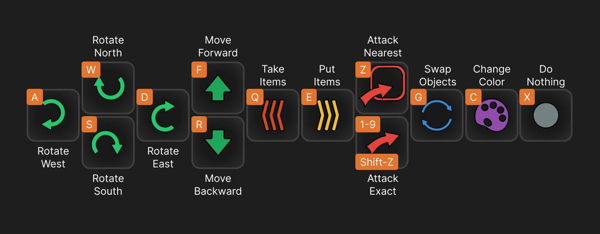

MettaScope
A visualization tool for analyzing and understanding AI agent behavior in Metta environments. MettaScope provides detailed insights into agent actions, decisions, and performance through an interactive interface.
Metta
Metta AI represents a sophisticated approach to multi-agent reinforcement learning, combining advanced neural architectures with carefully designed social mechanics. At its core, the system operates in a grid-based world where AI agents must learn to navigate, collect resources, and cooperate with others.
The agent architecture features a three-component design:
- Convolutional Neural Network (CNN): Processes spatial information across 34 channels, including agent positions, resource locations, obstacles, and team affiliations
- Long Short-Term Memory (LSTM): Enables temporal reasoning and memory of past interactions
- Self-Knowledge Network: Manages internal state, including position, resources, health, and goals
Agents operate in teams, typically containing six members, with relationship scores assigned at the start of the simulation. The reward sharing mechanism operates on a 50-50 split between team members, creating a complex optimization problem where agents must balance individual goals with team objectives. Learning how to cooperate with larger and more specialized groups represents the core agent intelligence development challenge.
What exactly am I looking at?
In this visualization, you're watching AI agents navigate and interact in a grid-based world. Here's what's happening:
Resource Collection
Agents are constantly searching for and collecting resources, particularly hearts (❤️) which appear as glowing items in the environment. When an agent finds a heart, they can:
- Collect Hearts: Use the 'Q' key to pick up hearts when standing next to them
- Store Resources: Hearts and other resources are stored in the agent's inventory
- Share Resources: Agents can share resources with team members to help the group survive
Combat and Defense
Agents can engage in combat with other agents:
- Freezing Attacks: Agents can freeze other agents using the 'Z' key (nearest target) or number keys 1-9 (specific targets)
- Team Defense: Agents work together to protect team members and shared resources
- Strategic Positioning: Agents must position themselves carefully to avoid being frozen while protecting their resources
Movement and Navigation
Agents move through the world using a combination of:
- Rotation: Use 'W', 'A', 'S', 'D' to rotate the agent in different directions
- Forward/Backward: 'F' to move forward, 'R' to move backward
- Resource Management: 'E' to put down items, 'G' to swap objects with other agents
Team Coordination
The most fascinating aspect is watching how agents coordinate their actions to achieve team objectives:
- Resource Sharing:
- Agents actively distribute hearts among team members to ensure collective survival
- When an agent has excess resources, they seek out teammates who are low on hearts
- Teams develop specialized roles - some agents focus on resource collection while others protect the team's shared resources
- Group Defense:
- Agents form defensive formations around valuable resources and vulnerable teammates
- When under attack, agents coordinate their freezing actions to protect the team's heart supply
- Teams establish territory control by maintaining a presence around key resource locations
- Strategic Planning:
- Agents learn to balance immediate resource needs with long-term team survival
- Teams develop complex strategies like resource stockpiling, territory control, and coordinated attacks
- Individual agents may sacrifice personal resources to support critical team objectives
- Communication and Coordination:
- Through their actions, agents develop an implicit communication system
- Agents learn to interpret teammate movements and actions to predict team needs
- Teams develop specialized roles and coordinated attack patterns
- Agents adapt their behavior based on the team's current state and objectives
The neural architecture enables this complex coordination through:
- Team Awareness: Agents maintain awareness of teammate positions, resources, and states
- Relationship Learning: The system learns to value team success alongside individual survival
- Adaptive Strategies: Teams develop and refine their coordination strategies through experience
The action traces visualization (the colored lines and markers) shows you the history of these interactions. Different colors represent different types of actions - movement paths, resource collection points, interaction locations, and team coordination events. You can zoom in to see the details of specific interactions or zoom out to understand the overall strategy.
Controls

Playback Controls
- Play/Pause: Control playback with the play/pause button
- Frame Navigation: Step forward/backward to move frame by frame
- Speed Control: Adjust playback speed using the speed controls
- Scrubbing: Drag the scrubber to jump to any point in the replay
Visualization Controls
- Grid Toggle: Show/hide the grid with the grid button
- Resource Display: Toggle resource visibility with the heart icon
- Fog of War: Show/hide fog of war with the cloud icon, revealing what agents can and cannot see
- View Modes:
- Pin Icon: Toggle agent following mode, keeping the selected agent centered
- Eye Icon: Toggle agent vision range visualization
Action Traces
The action traces visualization shows the history of agent movements and interactions. You can:
- Zoom: Use mouse wheel to zoom in/out of the traces
- Pan: Click and drag to move around the trace view
- Trace Colors: Different colors represent different types of actions:
- Movement paths
- Resource collection points
- Interaction locations
- Team coordination events
Navigation
- Pan: Click and drag to move the view
- Zoom: Use mouse wheel to zoom in/out
- Selection: Click on units to select them
- Search: Use the filter field to find specific units
Agent Controls

When you select an agent, you can take direct control using these keyboard commands:
A Rotate West
W Rotate North
S Rotate South
D Rotate East
F Move Forward
R Move Backward
Q Take Items
E Put Items
Z Nearest Attack
1-9 Exact Attack
G Swap Objects
C Change Color
X Do Nothing
When controlling an agent, you can:
- View Agent Details: See the agent's current state, resources, and team affiliation
- Track Movement: Follow the agent's path through the environment
- Analyze Behavior: Study the agent's decision-making patterns and interactions
- Team Context: Understand how the agent fits into its team's overall strategy